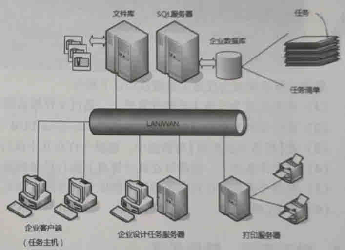
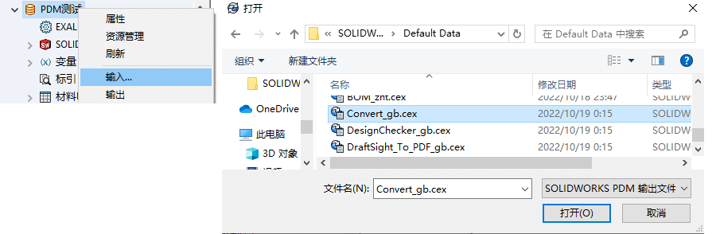
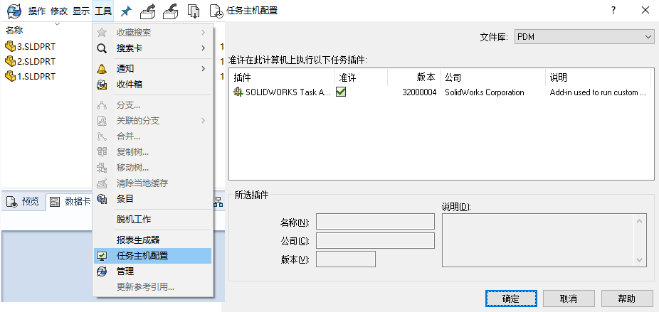
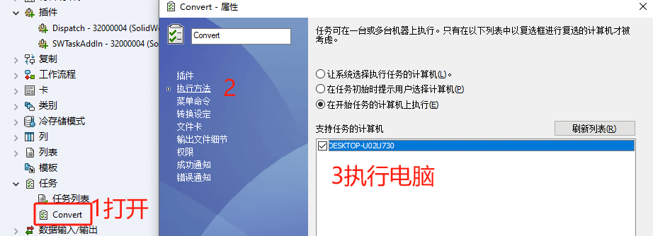
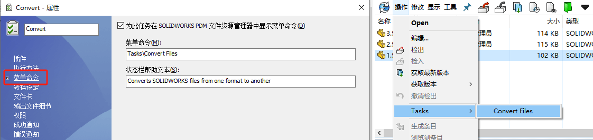
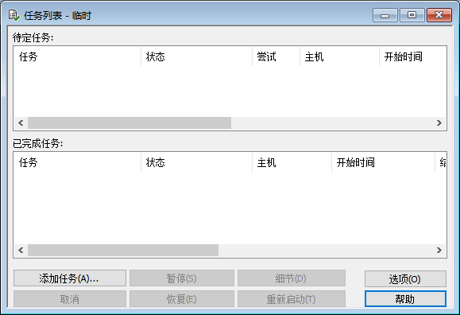

PDM插件和任务
通过管理工具中的任务特征，可配置、运行和监控常用的Enterpise PDM 文件操作任务。这些任务由通过 Enterprise PDM API创建的插件定义
1添加插件&任务
1、通过使用插件，您可以更好地配置 PDM
2、新插件：加载.dll 文件
3、调试插件：您无需将插件添加到库也可调试该插件。调试时，插件将从编译程序将之注册的地方加载。其他用户不会受到插件的影响。
2配置任务主机
通常，整个操作都需要标准权限或仅需要管理员登录名。并且需要有电脑设置成【任务主机配置】这样，该电脑就能进行插件任务的运行。在“ 插件”上设置一个选中标记（这需要提升的权限或管理员权限）
接下来打开管理员面板，右键单击该任务，然后按“打开”。转到“执行方法”，然后在您的计算机名称上打勾。完成
在客户端里的命令设置可以从【任务-菜单命令】里设置。命令按钮会在客户端的菜单里显示。
任务列表
您可以使用任务列表对话框查看任务状态、手动启动任务、查看已完成任务的详细信息，以及设置时间间隔以刷新未决任务列表。 也可以暂停和恢复任务。
dispatch
SWTaskAdd
为确保插件（如 SOLIDWORKS Task 插件）的最新版本正在运行，您必须手动升级插件。
将文件保管库升级到新的 Service Pack 或版本时，现有的 加载项不会自动更新。这是为了防止 覆盖自定义项的加载项。
例如，您可能已自定义由 SOLIDWORKS 任务插件。您可以继续使用自定义任务，而不升级。 但是，您将无法使用新的任务功能，并且可能会遇到问题 启动任务并处理升级的 SOLIDWORKS 文件。
自 升级 这 任务 手动地 复制 .cex 文件 那 包含 SWTaskAdd-in、 转换 设计检查器和打印 任务。 这 位置 之 .cex 文件取决于 安装 之 客户端。如果安装客户端 通过 在 InstallShield 向导中，将 .cex 文件复制到 C：\Program Files\SOLIDWORKS PDM\Default Data\ 文件夹。 如果安装 客户 通过 SOLIDWORKS 安装管理程序，将 .cex 文件复制到 C：\Program Files\SOLIDWORKS Corp\Default Data\ 文件夹。您导入 这些文件中的一个或多个，用于更新 SWTaskAdd-in 及其任务 支持。
内容
确定 SOLIDWORKS PDM 和 SOLIDWORKS Task 插件的当前版本
为确保您拥有 SOLIDWORKS Task 插件的最新更新，SOLIDWORKS PDM Professional 版本和 SWTaskAddin 版本应相同。
执行 SWTaskAddin 升级（仅限 SOLIDWORKS PDM Professional）
如果 SWTaskAddin 的版本低于 SOLIDWORKS PDM Professional 的版本，您可以通过导入 .cex 文件来升级 SWTaskAddin。
-
升级 SWTaskAddin 后，可以导入最新版本的“转换”、“打印”和“设计检查器”任务。